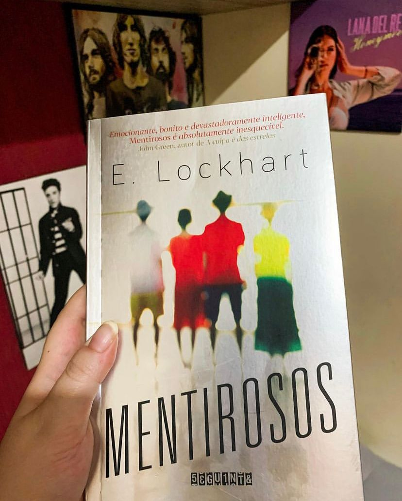

Mentirosos
(E. Lockhart - Seguinte)
⭐⭐⭐⭐
Antes de contar do que se trata a história em si, preciso dizer que não dei muita coisa por esse livro principalmente por causa do hype mas, no final das contas foi só o surto. Fogo no parquinho, porque eu fiquei chocada!
Na família Sinclair, ninguém é carente, criminoso, viciado ou fracassado. Mas talvez isso seja mentira.
Na família Sinclair, ninguém é carente, criminoso, viciado ou fracassado. Mas talvez isso seja mentira.
Os Sinclair são uma família rica e renomada, que se recusa a admitir que está em decadência e se agarra a todo custo às tradições. Assim, todo ano o patriarca, suas três filhas e seus respectivos filhos passam as férias de verão em sua ilha particular. Cadence - neta primogênita e principal herdeira -, seus primos Johnny e Mirren e o amigo Gat são inseparáveis desde pequenos, e juntos formam um grupo chamado Mentirosos. Durante o verão de seus quinze anos, as férias idílicas de Cadence são interrompidas quando a garota sofre um estranho acidente. Ela passa os próximos dois anos em um período conturbado, com amnésia, depressão, fortes dores de cabeça e muitos analgésicos. Toda a família a trata com extremo cuidado e se recusa a dar mais detalhes sobre o ocorrido... até que Cadence finalmente volta à ilha para juntar as lembranças do que realmente aconteceu.
Se você tá procurando por ação e cenas de tirar o fôlego esqueça, “mentirosos” não é pra você. Temos aqui um suspense psicólogo onde tudo vai se desenrolando aos poucos, as pistas são sutis porém, estão por todas as partes.
Ninguém conta a Cadence o que realmente aconteceu naquele verão, ela é tratada como “frágil” pela família e tem uma que investigar por conta própria. Aqui temos que ressaltar que a narração é em primeira pessoa e muitas vezes nos pegamos desconfiando da narradora.
Recomendo demais, não é um livro pesado, com cenas extremas e tudo tende mais ao psicólogo. E o livro vale o plot twist, desafio você a desvendar todo esse mistério antes da grande revelação.